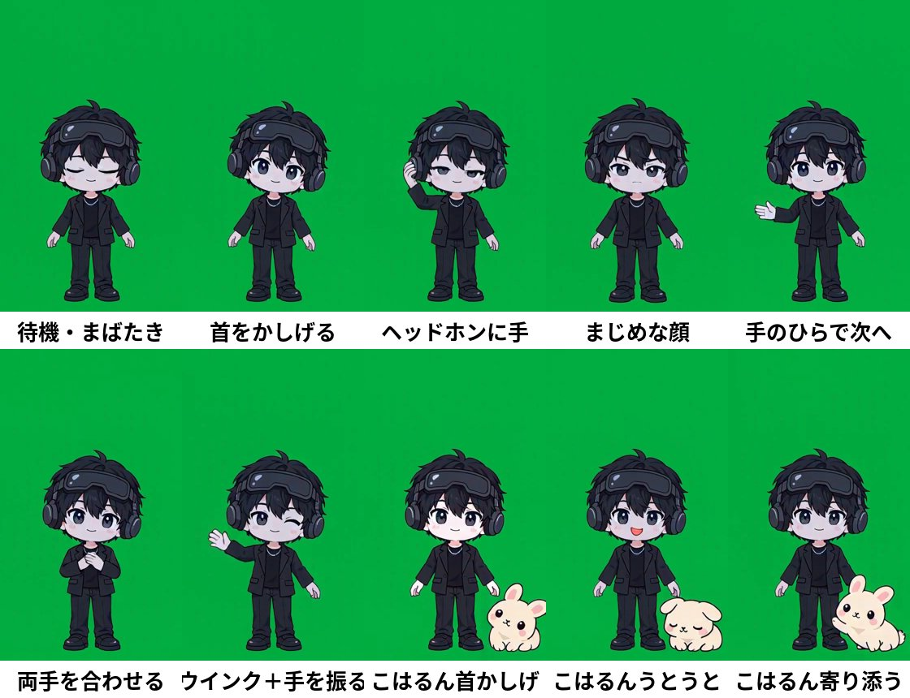
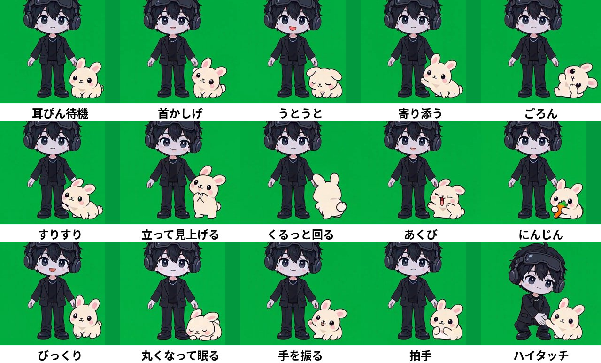

1種類ずつ約4秒、全22種で約1分35秒。上の帯に番号と動きの名前を出しています。
※「うとうと」「びっくり」で開くコルンの口は、本番では口の描き直しで閉じます（このサンプルは素材のまま）。
11/10 15:25 直した点：両手を合わせる（6）・立って見上げる（14）・前足で手を振る（20）・ハイタッチ（22）をゆっくり動き出して止まる動きに作り直し、首かしげ（9）の顔の横のこぶを解消、全22種にキャラクターの白フチを付けました。ヘッドホンに手（3）は作り直しても腕が急に横へ出るため、前の版のままです。
11/10 13:35 直した点：にんじんの葉を緑に（緑幕の抜きで消えていた）、くるっと回るを途中の角度が飛ばない動きに作り直し。

